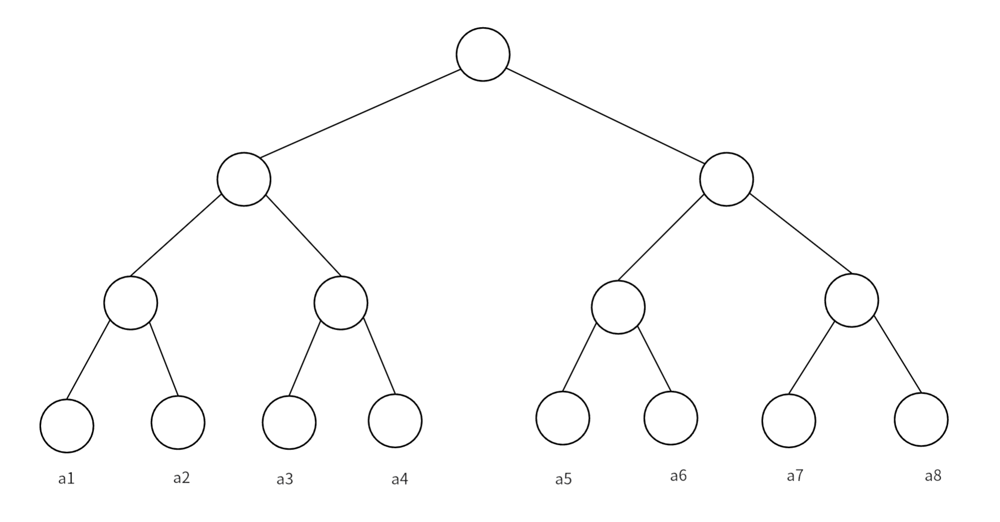
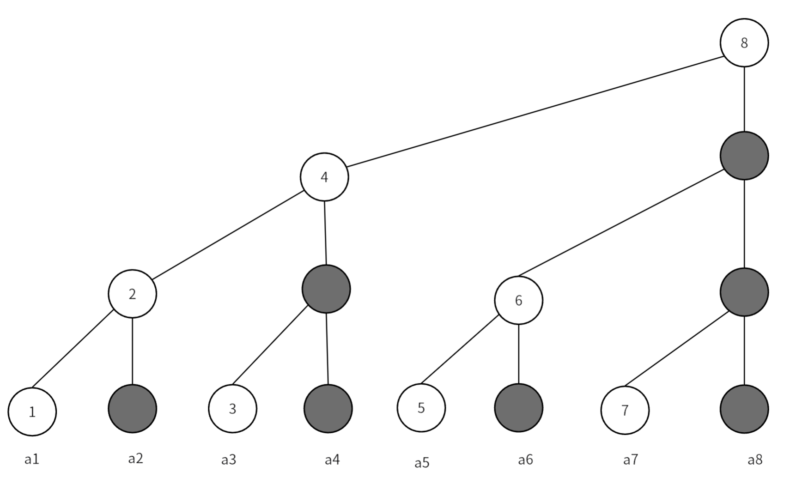
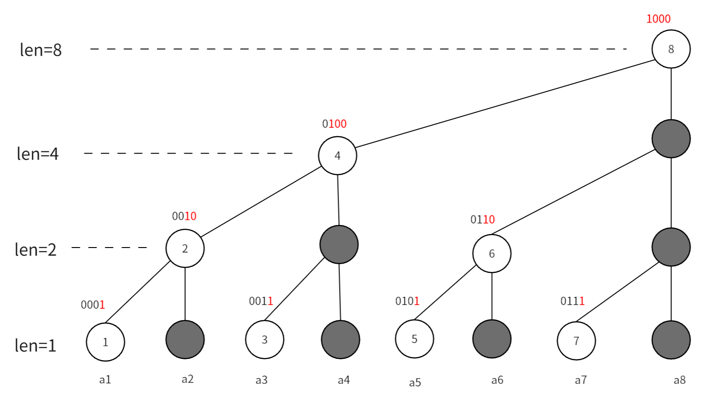

树状数组
定义
树状数组是利用数的二进制特征进行检索的一种树状的结构。它用于维护前缀和的数据结构，支持单点修改、区间查询；区间修改、区间查询等一系列操作。 树状数组维护的元素要满足结合律和可差分的性质。
原理
给定一个数组 \(\{a_1,a_2\dots ,a_8 \}\) ，我们如何快速的求其前缀和呢？ 一般我们求前缀和就是累加，时间复杂度是\(O(n)\)，一种容易想到的分治的优化策略是，对数组中的元素两两求和并且存到新的数组中，一直这样计算下去直到新数组中只有一个元素，如下：

这样就优化成线段树了，求前缀和、修改元素值的复杂度就都是\(O(\log n)\)了，但是对于求前缀和有很多元素是多余的，如：我们要求\(a_1\)到\(a_4\)的前缀和，只需要用到\(a_4\)的父节点，并不需要`\(a_4\)其本身。我们将类似的节点都删掉，就得到树状数组：

图中黑色节点都是被删除的节点，这样空间复杂度就优化为\(O(n)\)了，我们可以直接将节点值存到一个数组中。但是问题来了，我们该怎么在数组中正确快速的求前缀和呢？这就要用到大名鼎鼎的\(lowbit\)函数了
\(lowbit\) 函数
我们将每个节点下标对应的二进制形式写出来，就能看出一些规律：

- 每个节点覆盖的长度是其二进制表示下的最低位 \(1\) 及其后面的 \(0\) 构成的数值
- 每个节点的父节点的下标就是在其二进制的最低位 \(1\) 加上 \(1\) 。
那么实现树状数组的就归结到一个关键问题：如何快速找到一个数二进制表示下最低位\(1\)及其后面的\(0\)构成的数值。这也就是\(lowbit\)函数的功能。
我们举个例子：求 \(lowbit(10)\)
我们先将 \(10\) 的二进制位写出来 \((1010)_2\) ，在对其按位取反得到 \((0101)_2\) ，再加上 \(1\) ，就得到 \((0110)_2\) ，我们对比两个二进制数，发现除了最低位 \(1\) 及其后面的 \(0\) ，两个数字其他位上的数完全不同，我将两个数进行按位与&运算，就得到 \(lowbit\) 值了。
我们再思考，按位取反再加 \(1\) ，这不就是负数补码的运算过程吗，所以我们直接将该数取负再按位与即可得到 \(lowbit\) 的值，下面是代码：
所以节点 \(x\) 覆盖的长度就是其 \(lowbit(x)\) 的值，其父节点下标就是 \(x+lowbit(x)\) 。
实现
单点修改，区间查询
最简单的树状数组可以在\(O(\log n)\)的复杂度实现这两种操作
单点修改
我们修改某一位置的值，就将覆盖其的父节点的值都进行修改，将节点\(x\)加上\(d\)的实现如下：
区间查询
我们要求区间\([l,r]\)的和，其实就是\(sum(r)-sum(l-1)\)，\(sum(x)\)代表下标从\(1\)到\(x\)的前缀和，查询某个点的前缀和就是树状数组擅长的，就是从这个节点开始，向坐上找到上一个节点，并加上其节点的值，可以发现向左上找上一个节点，只需要将下标减去当前下标的\(lowbit\)值，下面是实现代码：
inline int ask(int x)
{
int sum = 0;
for (; x >= 1; x -= lowbit(x))
sum += f[x];
return sum;
}
//求区间[l,r]的和
//ask(r)-ask(l-1);
区间修改，单点查询
区间修改
我们只需一个简单而巧妙的操作，就能利用树状数组高效的实现区间修改，这个操作就是差分数组，我们用树状数组维护原数组的差分数组，这样我当我们要修改某个区间的值时，只需要修改两个端点即可。
void update(int x,int d)
{
for(int i=x;i<=n;i+=lowbit(i))
f[i]+=d;
}
void change(int x,int y,int k)
{
update(x,k);
update(y+1,-k);
}
单点查询
众所周知，差分的逆运算是求前缀和，树状数组计算的就是前缀和，用树状数组维护差分数组，那么树状数组计算得到就是单点的元素值，即 \(ask(x)=a[x]\) ，所以单点查询和上面的查询实现相同：
区间修改，区间查询
区间查询
我们要利用树状数组求区间和，首先要求前缀和\(sum(k)\)，这里我们定义差分数组\(d\)，它和原数组的关系是\(a[k]=d[1]+d[2]+\cdots+d[k]\)，\(d[k]=a[k]-a[k-1]\)，下面推导前缀和与差分数组的关系：
公式最后一行是求两个前缀和，可以用两个树状数组分别来维护，这样就可计算出前缀和\(sum(x)\)，区间和也就很好计算了，下面是实现：
int ask1(int x)
{
int sum = 0;
for (; x > 0; x -= lowbit(x))
sum += f1[x];
return sum;
}
int ask2(int x)
{
int sum = 0;
for (; x > 0; x -= lowbit(x))
sum += f2[x];
return sum;
}
int ask(int l, int r)
{
return r * ask1(r) - ask2(r) - (l - 1) * ask1(l - 1) + ask2(l - 1);
}
区间修改
区间修改时，两个数组要同时修改，实现方式和上面相同。
维护\(\sum_{i=1}^{k}(i-1)d_i\)时，对\(k\)位置增加\(d\)时，\(f[k]\)变为\((k - 1)(d_k+d)\)，将其拆开得到，\((k-1)d_k+(k-1)d\)，所以在修改后者时，我们要修改的值变为\((i-1)d\)，下面时具体实现:
void update1(int x, int d)
{
for (; x <= n; x += lowbit(x))
f1[x] += d;
}
void update2(int x, int d)
{
for (; x <= n; x += lowbit(x))
f2[x] += d;
}
void change(int l, int r, int d)
{
update1(l, d), update1(r + 1, -d);
update2(l, (l - 1) * d), update2(r + 1, -r * d);
}
树状数组维护区间最值
以前树状数组节点值是\([x-lowbit(x)+1,x]\)区间的元素和，这里树状数组节点值就改为存放\([x-lowbit(x)+1,x]\)区间的最大值。 在修改区间最值时，要更新树状数组上所有被其影响的节点，即所有与其直接相连的节点，其父节点和子节点。
在查询时分两种情况，如果当前节点覆盖的范围，超过了我们的查询范围，就用原数组对应下标的值去更新答案，并且向前递推；如果没有超过我们的查询范围，就直接用当前节点的值去更新答案。
参考文章：
OI Wiki
《算法竞赛-上册》-罗永军
B站〔manim | 算法 | 数据结构〕 完全理解并深入应用树状数组